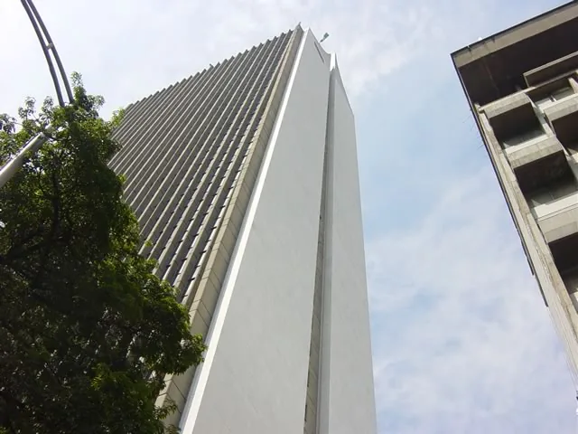
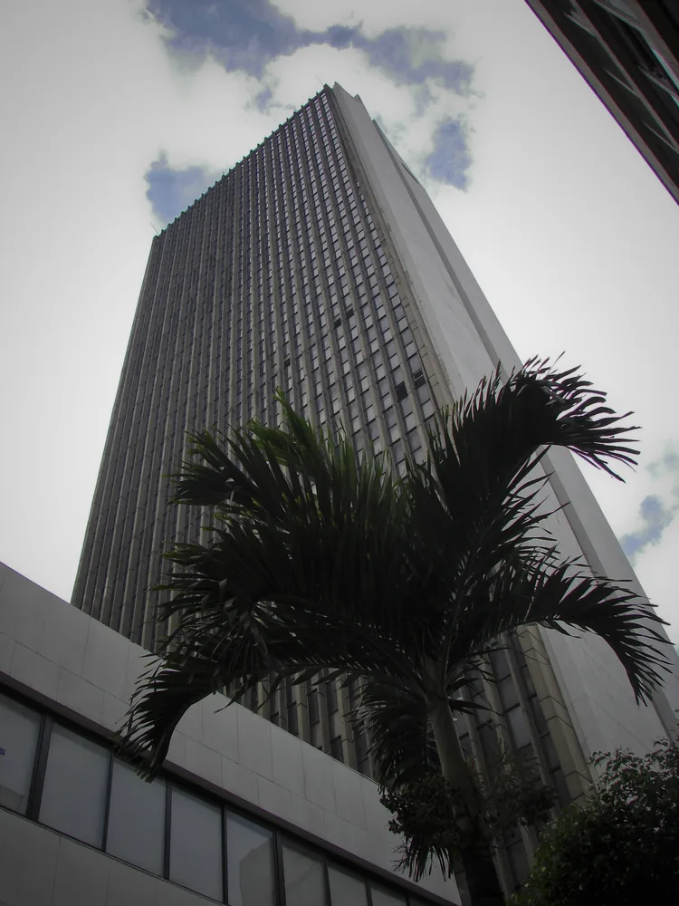
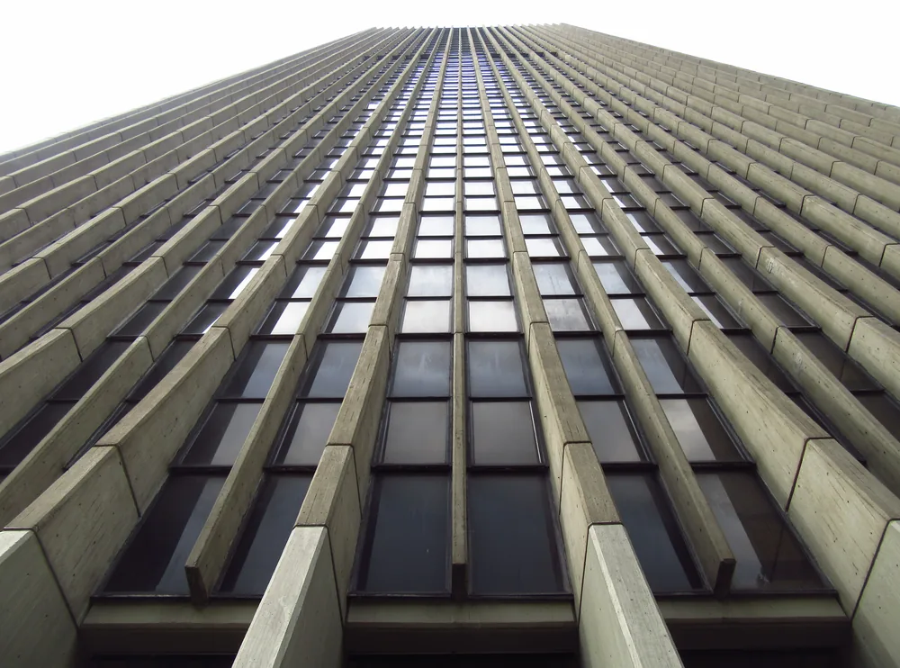
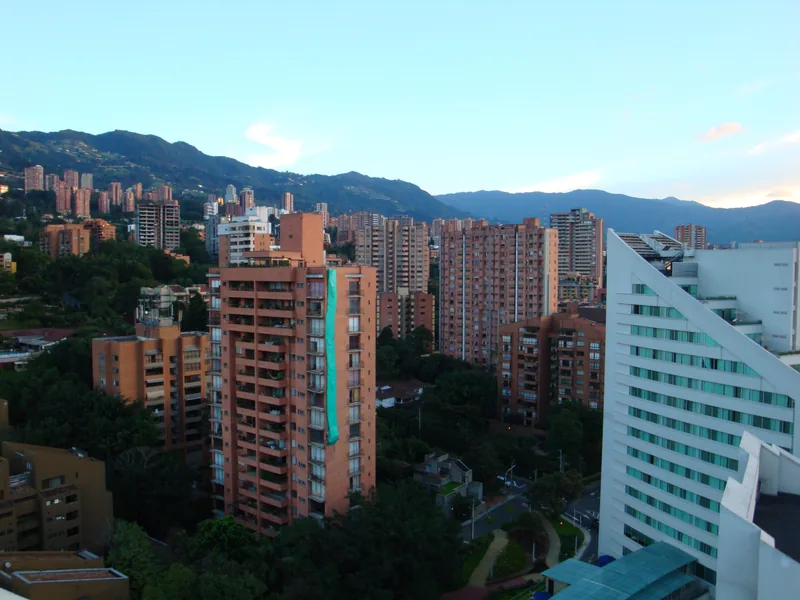

Medellín · revisión ampliada privada 28 sitios propuestos; fotografías originales antes de ilustración. Sin aprobación ni publicación.
Propuestas de portada · elección independiente Originales reales autorizados por licencia; aprobación humana pendiente. No se generaron ilustraciones. Se muestran sin recorte para conservar el atractivo.
Las decisiones de esta pantalla son borradores locales; se exportan para revisión del coordinador y no publican ni autorizan generación automáticamente.
Persona revisora Exportar decisiones de revisión
Propuesta 4 · portada-4 Candidata con límite de resolución; original pequeño, sin ampliar
Coltejer con silueta reconocible y contexto urbano; árbol cubre parte de base. Original640x480 histórico: adecuado para elegir referencia, insuficiente para portada grande sin ampliar.

Luis Pérez · 2006-02-24 · CC BY 2.0
Fuente / licencia Escritorio y móvil: sin recorte, imagen completa. IDs conservados; numeración no implica recomendación ni aprobación.
Revisión independiente · portada-4 eleccion_portada Pendiente Proponer aprobar Pedir corrección Rechazar propuesta referencia_foto Pendiente Proponer aprobar Pedir corrección Rechazar propuesta licencia Pendiente Proponer aprobar Pedir corrección Rechazar propuesta Propuesta 5 · portada-5 Candidata para elegir referencia; sin aprobación
Vista territorial general del valle.
Luis90f · 2016-08-19 · CC BY-SA 4.0
Fuente / licencia Escritorio y móvil: sin recorte, imagen completa. IDs conservados; numeración no implica recomendación ni aprobación.
Revisión independiente · portada-5 eleccion_portada Pendiente Proponer aprobar Pedir corrección Rechazar propuesta referencia_foto Pendiente Proponer aprobar Pedir corrección Rechazar propuesta licencia Pendiente Proponer aprobar Pedir corrección Rechazar propuesta Propuesta 6 · portada-6 Candidata para elegir referencia; sin aprobación
Referencia cultural/botánica concreta, menos panorámica.
Jorge Láscar · 2010-04-17 · CC BY-SA 3.0
Fuente / licencia Escritorio y móvil: sin recorte, imagen completa. IDs conservados; numeración no implica recomendación ni aprobación.
Revisión independiente · portada-6 eleccion_portada Pendiente Proponer aprobar Pedir corrección Rechazar propuesta referencia_foto Pendiente Proponer aprobar Pedir corrección Rechazar propuesta licencia Pendiente Proponer aprobar Pedir corrección Rechazar propuesta Descartadas/solo referencia, no portada Se conserva la trazabilidad y los IDs originales; estas imágenes no tienen control de elección de portada.
Propuesta 1 · portada-1 Descartada para portada / solo referencia
Palma obstruye parte del edificio; conservar antecedente, no seleccionar como portada.

laloking97 · 2007-03-10 · CC BY-SA 2.0
Fuente / licencia Escritorio y móvil: sin recorte, imagen completa. IDs conservados; numeración no implica recomendación ni aprobación.
Revisión independiente · portada-1 referencia_foto Pendiente Proponer aprobar Pedir corrección Rechazar propuesta licencia Pendiente Proponer aprobar Pedir corrección Rechazar propuesta Propuesta 2 · portada-2 Descartada para portada / solo referencia
Contrapicado en blanco y negro: no muestra silueta completa; útil como detalle, limitada representatividad para portada.
Ephren23 · 2013-11-08 · CC BY-SA 4.0
Fuente / licencia Escritorio y móvil: sin recorte, imagen completa. IDs conservados; numeración no implica recomendación ni aprobación.
Revisión independiente · portada-2 referencia_foto Pendiente Proponer aprobar Pedir corrección Rechazar propuesta licencia Pendiente Proponer aprobar Pedir corrección Rechazar propuesta Propuesta 3 · portada-3 Descartada para portada / solo referencia
Contrapicado de fachada sin silueta completa: propuesto como detalle, no como vista representativa general.

Felipe Restrepo Acosta · 2018-04-24 · CC BY-SA 4.0
Fuente / licencia Escritorio y móvil: sin recorte, imagen completa. IDs conservados; numeración no implica recomendación ni aprobación.
Revisión independiente · portada-3 referencia_foto Pendiente Proponer aprobar Pedir corrección Rechazar propuesta licencia Pendiente Proponer aprobar Pedir corrección Rechazar propuesta Inventario ampliado · 28 sitios propuestos Sin límite de tarjetas. Ubicaciones descriptivas documentadas; coordenadas y entradas exactas pendientes donde se indica.
Museo de Antioquia museo-ciencia-naturaleza · Medellín · Ver fuente de operador
propuesto · Atractivo con fuente de operador consultada.
Fotografía: faltante; ubicación exacta: pendiente
es: Arte e historia regional con salas dedicadas a Fernando Botero y Débora Arango.
en: Art and regional history, including rooms dedicated to Fernando Botero and Débora Arango.
pt-BR: Arte e história regional, com salas dedicadas a Fernando Botero e Débora Arango.
Fuente antioquia Revisión independiente · museo-antioquia inclusion Pendiente Proponer aprobar Pedir corrección Rechazar propuesta ubicacion Pendiente Proponer aprobar Pedir corrección Rechazar propuesta texto_es Pendiente Proponer aprobar Pedir corrección Rechazar propuesta texto_en Pendiente Proponer aprobar Pedir corrección Rechazar propuesta texto_pt-BR Pendiente Proponer aprobar Pedir corrección Rechazar propuesta referencia_foto Pendiente Proponer aprobar Pedir corrección Rechazar propuesta licencia Pendiente Proponer aprobar Pedir corrección Rechazar propuesta Jardín Botánico Joaquín Antonio Uribe museo-ciencia-naturaleza · Medellín · Ver fuente de operador
propuesto · Atractivo con fuente de operador consultada.
Fotografía: referencia_autorizada_sin_aprobacion; ubicación exacta: pendiente
es: Colecciones vivas y actividades de educación ambiental; consulta la programación oficial.
en: Living collections and environmental education; check the official programme.
pt-BR: Coleções vivas e educação ambiental; consulte a programação oficial.
Fuente botanico Revisión independiente · jardin-botanico inclusion Pendiente Proponer aprobar Pedir corrección Rechazar propuesta ubicacion Pendiente Proponer aprobar Pedir corrección Rechazar propuesta texto_es Pendiente Proponer aprobar Pedir corrección Rechazar propuesta texto_en Pendiente Proponer aprobar Pedir corrección Rechazar propuesta texto_pt-BR Pendiente Proponer aprobar Pedir corrección Rechazar propuesta referencia_foto Pendiente Proponer aprobar Pedir corrección Rechazar propuesta licencia Pendiente Proponer aprobar Pedir corrección Rechazar propuesta Parque Explora museo-ciencia-naturaleza · Medellín · Ver fuente de operador
propuesto · Atractivo con fuente de operador consultada.
Fotografía: faltante; ubicación exacta: pendiente
es: Museo de ciencias con acuario y propuesta de aprendizaje interactivo.
en: Science museum with an aquarium and interactive learning.
pt-BR: Museu de ciências com aquário e aprendizagem interativa.
Fuente explora Revisión independiente · parque-explora inclusion Pendiente Proponer aprobar Pedir corrección Rechazar propuesta ubicacion Pendiente Proponer aprobar Pedir corrección Rechazar propuesta texto_es Pendiente Proponer aprobar Pedir corrección Rechazar propuesta texto_en Pendiente Proponer aprobar Pedir corrección Rechazar propuesta texto_pt-BR Pendiente Proponer aprobar Pedir corrección Rechazar propuesta referencia_foto Pendiente Proponer aprobar Pedir corrección Rechazar propuesta licencia Pendiente Proponer aprobar Pedir corrección Rechazar propuesta Museo de Arte Moderno de Medellín museo-ciencia-naturaleza · Medellín · Ver fuente de operador
propuesto · Atractivo con fuente de operador consultada.
Fotografía: faltante; ubicación exacta: pendiente
es: Arte moderno y programación cultural; revisa las exposiciones disponibles antes de ir.
en: Modern art and cultural programmes; check available exhibitions before visiting.
pt-BR: Arte moderna e programação cultural; confira as exposições antes da visita.
Fuente mamm Revisión independiente · mamm inclusion Pendiente Proponer aprobar Pedir corrección Rechazar propuesta ubicacion Pendiente Proponer aprobar Pedir corrección Rechazar propuesta texto_es Pendiente Proponer aprobar Pedir corrección Rechazar propuesta texto_en Pendiente Proponer aprobar Pedir corrección Rechazar propuesta texto_pt-BR Pendiente Proponer aprobar Pedir corrección Rechazar propuesta referencia_foto Pendiente Proponer aprobar Pedir corrección Rechazar propuesta licencia Pendiente Proponer aprobar Pedir corrección Rechazar propuesta Edificio Coltejer arquitectura · Medellín · Junín con Avenida La Playa, centro
propuesto · Diversifica patrimonio, espacios públicos, barrios o actividades relevantes documentadas; selección humana pendiente.
Fotografía: candidatos_sin_aprobar; ubicación exacta: pendiente_corroborrar_coordenada_y_acceso
es: Hito de la industria textil; propuesta de observación exterior, sin prometer acceso interior.
en: Textile-industry landmark; an exterior viewing proposal, without promising interior access.
pt-BR: Marco da indústria têxtil; proposta de observação externa, sem prometer acesso interno.
Fuente coltejer Revisión independiente · coltejer inclusion Pendiente Proponer aprobar Pedir corrección Rechazar propuesta ubicacion Pendiente Proponer aprobar Pedir corrección Rechazar propuesta texto_es Pendiente Proponer aprobar Pedir corrección Rechazar propuesta texto_en Pendiente Proponer aprobar Pedir corrección Rechazar propuesta texto_pt-BR Pendiente Proponer aprobar Pedir corrección Rechazar propuesta referencia_foto Pendiente Proponer aprobar Pedir corrección Rechazar propuesta licencia Pendiente Proponer aprobar Pedir corrección Rechazar propuesta Pueblito Paisa / Cerro Nutibara patrimonio · Medellín · Cima del Cerro Nutibara
propuesto · Diversifica patrimonio, espacios públicos, barrios o actividades relevantes documentadas; selección humana pendiente.
Fotografía: faltante_referencia_autorizada; ubicación exacta: pendiente_corroborrar_coordenada_y_acceso
es: Recreación de un pueblo antioqueño y mirador urbano; no es un pueblo colonial conservado.
en: Recreation of an Antioquian town and an urban viewpoint, rather than a preserved colonial town.
pt-BR: Recriação de um povoado antioquenho e mirante urbano; não é um povoado colonial preservado.
Fuente pueblito Revisión independiente · pueblito-paisa inclusion Pendiente Proponer aprobar Pedir corrección Rechazar propuesta ubicacion Pendiente Proponer aprobar Pedir corrección Rechazar propuesta texto_es Pendiente Proponer aprobar Pedir corrección Rechazar propuesta texto_en Pendiente Proponer aprobar Pedir corrección Rechazar propuesta texto_pt-BR Pendiente Proponer aprobar Pedir corrección Rechazar propuesta referencia_foto Pendiente Proponer aprobar Pedir corrección Rechazar propuesta licencia Pendiente Proponer aprobar Pedir corrección Rechazar propuesta Parque de los Pies Descalzos espacio-publico · Medellín · Sector Plaza Mayor / Edificio EPM
propuesto · Diversifica patrimonio, espacios públicos, barrios o actividades relevantes documentadas; selección humana pendiente.
Fotografía: faltante_referencia_autorizada; ubicación exacta: pendiente_corroborrar_coordenada_y_acceso
es: Parque urbano con espacios sensoriales, próximo a Plaza Mayor.
en: Urban park with sensory spaces near Plaza Mayor.
pt-BR: Parque urbano com espaços sensoriais perto da Plaza Mayor.
Fuente guia Revisión independiente · pies-descalzos inclusion Pendiente Proponer aprobar Pedir corrección Rechazar propuesta ubicacion Pendiente Proponer aprobar Pedir corrección Rechazar propuesta texto_es Pendiente Proponer aprobar Pedir corrección Rechazar propuesta texto_en Pendiente Proponer aprobar Pedir corrección Rechazar propuesta texto_pt-BR Pendiente Proponer aprobar Pedir corrección Rechazar propuesta referencia_foto Pendiente Proponer aprobar Pedir corrección Rechazar propuesta licencia Pendiente Proponer aprobar Pedir corrección Rechazar propuesta Edificio EPM (Edificio Inteligente) arquitectura · Medellín · Contiguo al Parque de los Pies Descalzos
propuesto · Diversifica patrimonio, espacios públicos, barrios o actividades relevantes documentadas; selección humana pendiente.
Fotografía: faltante_referencia_autorizada; ubicación exacta: pendiente_corroborrar_coordenada_y_acceso
es: Sede administrativa; visitas guiadas documentadas por EPM, sujetas a confirmación vigente.
en: Administrative headquarters; EPM has documented guided visits, subject to current confirmation.
pt-BR: Sede administrativa; a EPM documentou visitas guiadas, sujeitas a confirmação atual.
Fuente epm Revisión independiente · edificio-epm inclusion Pendiente Proponer aprobar Pedir corrección Rechazar propuesta ubicacion Pendiente Proponer aprobar Pedir corrección Rechazar propuesta texto_es Pendiente Proponer aprobar Pedir corrección Rechazar propuesta texto_en Pendiente Proponer aprobar Pedir corrección Rechazar propuesta texto_pt-BR Pendiente Proponer aprobar Pedir corrección Rechazar propuesta referencia_foto Pendiente Proponer aprobar Pedir corrección Rechazar propuesta licencia Pendiente Proponer aprobar Pedir corrección Rechazar propuesta Catedral Basílica Metropolitana patrimonio-religioso · Medellín · Parque Bolívar, centro
propuesto · Diversifica patrimonio, espacios públicos, barrios o actividades relevantes documentadas; selección humana pendiente.
Fotografía: faltante_referencia_autorizada; ubicación exacta: pendiente_corroborrar_coordenada_y_acceso
es: Templo catedralicio; respetar culto y confirmar condiciones de visita.
en: Cathedral church; respect worship and confirm visiting arrangements.
pt-BR: Templo catedralício; respeite o culto e confirme as condições de visita.
Fuente catedral Revisión independiente · catedral-metropolitana inclusion Pendiente Proponer aprobar Pedir corrección Rechazar propuesta ubicacion Pendiente Proponer aprobar Pedir corrección Rechazar propuesta texto_es Pendiente Proponer aprobar Pedir corrección Rechazar propuesta texto_en Pendiente Proponer aprobar Pedir corrección Rechazar propuesta texto_pt-BR Pendiente Proponer aprobar Pedir corrección Rechazar propuesta referencia_foto Pendiente Proponer aprobar Pedir corrección Rechazar propuesta licencia Pendiente Proponer aprobar Pedir corrección Rechazar propuesta Basílica de Nuestra Señora de la Candelaria patrimonio-religioso · Medellín · Parque Berrío, centro
propuesto · Diversifica patrimonio, espacios públicos, barrios o actividades relevantes documentadas; selección humana pendiente.
Fotografía: faltante_referencia_autorizada; ubicación exacta: pendiente_corroborrar_coordenada_y_acceso
es: Iglesia histórica distinta de la Catedral Metropolitana.
en: Historic church distinct from the Metropolitan Cathedral.
pt-BR: Igreja histórica distinta da Catedral Metropolitana.
Fuente centro Revisión independiente · candelaria inclusion Pendiente Proponer aprobar Pedir corrección Rechazar propuesta ubicacion Pendiente Proponer aprobar Pedir corrección Rechazar propuesta texto_es Pendiente Proponer aprobar Pedir corrección Rechazar propuesta texto_en Pendiente Proponer aprobar Pedir corrección Rechazar propuesta texto_pt-BR Pendiente Proponer aprobar Pedir corrección Rechazar propuesta referencia_foto Pendiente Proponer aprobar Pedir corrección Rechazar propuesta licencia Pendiente Proponer aprobar Pedir corrección Rechazar propuesta Parque Lleras vida-nocturna · Medellín · El Poblado; parque y entorno inmediato
propuesto · Diversifica patrimonio, espacios públicos, barrios o actividades relevantes documentadas; selección humana pendiente.
Fotografía: faltante_referencia_autorizada; ubicación exacta: pendiente_corroborrar_coordenada_y_acceso
es: Espacio urbano rodeado de gastronomía y vida nocturna; no confundir con todo El Poblado.
en: Urban space surrounded by dining and nightlife; distinct from the broader El Poblado district.
pt-BR: Espaço urbano cercado de gastronomia e vida noturna; distinto do bairro El Poblado inteiro.
Fuente lleras Revisión independiente · parque-lleras inclusion Pendiente Proponer aprobar Pedir corrección Rechazar propuesta ubicacion Pendiente Proponer aprobar Pedir corrección Rechazar propuesta texto_es Pendiente Proponer aprobar Pedir corrección Rechazar propuesta texto_en Pendiente Proponer aprobar Pedir corrección Rechazar propuesta texto_pt-BR Pendiente Proponer aprobar Pedir corrección Rechazar propuesta referencia_foto Pendiente Proponer aprobar Pedir corrección Rechazar propuesta licencia Pendiente Proponer aprobar Pedir corrección Rechazar propuesta Parque El Poblado espacio-publico · Medellín · Carrera 43 A # 10-01
propuesto · Diversifica patrimonio, espacios públicos, barrios o actividades relevantes documentadas; selección humana pendiente.
Fotografía: faltante_referencia_autorizada; ubicación exacta: pendiente_corroborrar_coordenada_y_acceso
es: Parque tradicional de El Poblado, distinto del Parque Lleras.
en: Traditional El Poblado park, separate from Parque Lleras.
pt-BR: Parque tradicional de El Poblado, separado do Parque Lleras.
Fuente poblado Revisión independiente · parque-poblado inclusion Pendiente Proponer aprobar Pedir corrección Rechazar propuesta ubicacion Pendiente Proponer aprobar Pedir corrección Rechazar propuesta texto_es Pendiente Proponer aprobar Pedir corrección Rechazar propuesta texto_en Pendiente Proponer aprobar Pedir corrección Rechazar propuesta texto_pt-BR Pendiente Proponer aprobar Pedir corrección Rechazar propuesta referencia_foto Pendiente Proponer aprobar Pedir corrección Rechazar propuesta licencia Pendiente Proponer aprobar Pedir corrección Rechazar propuesta Avenida Jardín / Vía Jardín gastronomia-compras · Medellín · Corredor entre los dos parques principales de Laureles
propuesto · Diversifica patrimonio, espacios públicos, barrios o actividades relevantes documentadas; selección humana pendiente.
Fotografía: faltante_referencia_autorizada; ubicación exacta: pendiente_corroborrar_coordenada_y_acceso
es: Corredor de cafés, restaurantes y comercios de Laureles; no confundir con Jardín, municipio.
en: Laureles corridor of cafés, restaurants and shops; not the municipality of Jardín.
pt-BR: Corredor de cafés, restaurantes e lojas de Laureles; não confundir com o município de Jardín.
Fuente jardin-laureles Revisión independiente · avenida-jardin inclusion Pendiente Proponer aprobar Pedir corrección Rechazar propuesta ubicacion Pendiente Proponer aprobar Pedir corrección Rechazar propuesta texto_es Pendiente Proponer aprobar Pedir corrección Rechazar propuesta texto_en Pendiente Proponer aprobar Pedir corrección Rechazar propuesta texto_pt-BR Pendiente Proponer aprobar Pedir corrección Rechazar propuesta referencia_foto Pendiente Proponer aprobar Pedir corrección Rechazar propuesta licencia Pendiente Proponer aprobar Pedir corrección Rechazar propuesta Plaza Botero arte-publico · Medellín · Exterior del Museo de Antioquia, centro
propuesto · Diversifica patrimonio, espacios públicos, barrios o actividades relevantes documentadas; selección humana pendiente.
Fotografía: faltante_referencia_autorizada; ubicación exacta: pendiente_corroborrar_coordenada_y_acceso
es: Esculturas en espacio público junto al museo.
en: Public sculptures beside the museum.
pt-BR: Esculturas em espaço público junto ao museu.
Fuente antioquia Revisión independiente · plaza-botero inclusion Pendiente Proponer aprobar Pedir corrección Rechazar propuesta ubicacion Pendiente Proponer aprobar Pedir corrección Rechazar propuesta texto_es Pendiente Proponer aprobar Pedir corrección Rechazar propuesta texto_en Pendiente Proponer aprobar Pedir corrección Rechazar propuesta texto_pt-BR Pendiente Proponer aprobar Pedir corrección Rechazar propuesta referencia_foto Pendiente Proponer aprobar Pedir corrección Rechazar propuesta licencia Pendiente Proponer aprobar Pedir corrección Rechazar propuesta Palacio de la Cultura Rafael Uribe Uribe arquitectura-cultura · Medellín · Entorno Plaza Botero, centro
propuesto · Diversifica patrimonio, espacios públicos, barrios o actividades relevantes documentadas; selección humana pendiente.
Fotografía: faltante_referencia_autorizada; ubicación exacta: pendiente_corroborrar_coordenada_y_acceso
es: Edificio patrimonial incluido en el mapa turístico oficial.
en: Heritage building listed on the official tourist map.
pt-BR: Edifício patrimonial incluído no mapa turístico oficial.
Fuente mapa Revisión independiente · palacio-cultura inclusion Pendiente Proponer aprobar Pedir corrección Rechazar propuesta ubicacion Pendiente Proponer aprobar Pedir corrección Rechazar propuesta texto_es Pendiente Proponer aprobar Pedir corrección Rechazar propuesta texto_en Pendiente Proponer aprobar Pedir corrección Rechazar propuesta texto_pt-BR Pendiente Proponer aprobar Pedir corrección Rechazar propuesta referencia_foto Pendiente Proponer aprobar Pedir corrección Rechazar propuesta licencia Pendiente Proponer aprobar Pedir corrección Rechazar propuesta Parque Bolívar espacio-publico · Medellín · Entorno de Catedral Metropolitana, centro
propuesto · Diversifica patrimonio, espacios públicos, barrios o actividades relevantes documentadas; selección humana pendiente.
Fotografía: faltante_referencia_autorizada; ubicación exacta: pendiente_corroborrar_coordenada_y_acceso
es: Parque del centro asociado al conjunto de la Catedral Metropolitana.
en: Central park associated with the Metropolitan Cathedral precinct.
pt-BR: Parque central ligado ao conjunto da Catedral Metropolitana.
Fuente mapa Revisión independiente · parque-bolivar inclusion Pendiente Proponer aprobar Pedir corrección Rechazar propuesta ubicacion Pendiente Proponer aprobar Pedir corrección Rechazar propuesta texto_es Pendiente Proponer aprobar Pedir corrección Rechazar propuesta texto_en Pendiente Proponer aprobar Pedir corrección Rechazar propuesta texto_pt-BR Pendiente Proponer aprobar Pedir corrección Rechazar propuesta referencia_foto Pendiente Proponer aprobar Pedir corrección Rechazar propuesta licencia Pendiente Proponer aprobar Pedir corrección Rechazar propuesta Parque Berrío espacio-publico · Medellín · Centro, frente a La Candelaria
propuesto · Diversifica patrimonio, espacios públicos, barrios o actividades relevantes documentadas; selección humana pendiente.
Fotografía: faltante_referencia_autorizada; ubicación exacta: pendiente_corroborrar_coordenada_y_acceso
es: Punto de referencia del centro para recorrer Junín y su patrimonio.
en: Downtown landmark for exploring Junín and its heritage.
pt-BR: Referência central para conhecer Junín e seu patrimônio.
Fuente coltejer Revisión independiente · parque-berrio inclusion Pendiente Proponer aprobar Pedir corrección Rechazar propuesta ubicacion Pendiente Proponer aprobar Pedir corrección Rechazar propuesta texto_es Pendiente Proponer aprobar Pedir corrección Rechazar propuesta texto_en Pendiente Proponer aprobar Pedir corrección Rechazar propuesta texto_pt-BR Pendiente Proponer aprobar Pedir corrección Rechazar propuesta referencia_foto Pendiente Proponer aprobar Pedir corrección Rechazar propuesta licencia Pendiente Proponer aprobar Pedir corrección Rechazar propuesta Pasaje Junín comercio-gastronomia · Medellín · Centro, corredor Junín
propuesto · Diversifica patrimonio, espacios públicos, barrios o actividades relevantes documentadas; selección humana pendiente.
Fotografía: faltante_referencia_autorizada; ubicación exacta: pendiente_corroborrar_coordenada_y_acceso
es: Corredor comercial para descubrir la vida local del centro.
en: Shopping corridor offering a glimpse of downtown daily life.
pt-BR: Corredor comercial para conhecer a vida cotidiana do centro.
Fuente compras Revisión independiente · junin inclusion Pendiente Proponer aprobar Pedir corrección Rechazar propuesta ubicacion Pendiente Proponer aprobar Pedir corrección Rechazar propuesta texto_es Pendiente Proponer aprobar Pedir corrección Rechazar propuesta texto_en Pendiente Proponer aprobar Pedir corrección Rechazar propuesta texto_pt-BR Pendiente Proponer aprobar Pedir corrección Rechazar propuesta referencia_foto Pendiente Proponer aprobar Pedir corrección Rechazar propuesta licencia Pendiente Proponer aprobar Pedir corrección Rechazar propuesta Provenza gastronomia-vida-nocturna · Medellín · Sector cercano al Parque Lleras, El Poblado
propuesto · Diversifica patrimonio, espacios públicos, barrios o actividades relevantes documentadas; selección humana pendiente.
Fotografía: faltante_referencia_autorizada; ubicación exacta: pendiente_corroborrar_coordenada_y_acceso
es: Sector gastronómico cercano a Lleras, sin tratarlo como el mismo parque.
en: Dining area near Lleras, not the park itself.
pt-BR: Área gastronômica próxima de Lleras, sem confundi-la com o parque.
Fuente lleras Revisión independiente · provenza inclusion Pendiente Proponer aprobar Pedir corrección Rechazar propuesta ubicacion Pendiente Proponer aprobar Pedir corrección Rechazar propuesta texto_es Pendiente Proponer aprobar Pedir corrección Rechazar propuesta texto_en Pendiente Proponer aprobar Pedir corrección Rechazar propuesta texto_pt-BR Pendiente Proponer aprobar Pedir corrección Rechazar propuesta referencia_foto Pendiente Proponer aprobar Pedir corrección Rechazar propuesta licencia Pendiente Proponer aprobar Pedir corrección Rechazar propuesta Vía Primavera moda-compras · Medellín · Sector cercano al Parque Lleras, El Poblado
propuesto · Diversifica patrimonio, espacios públicos, barrios o actividades relevantes documentadas; selección humana pendiente.
Fotografía: faltante_referencia_autorizada; ubicación exacta: pendiente_corroborrar_coordenada_y_acceso
es: Sector de diseño y compras incluido en la guía oficial.
en: Design and shopping area listed in the official guide.
pt-BR: Área de design e compras incluída na guia oficial.
Fuente compras Revisión independiente · via-primavera inclusion Pendiente Proponer aprobar Pedir corrección Rechazar propuesta ubicacion Pendiente Proponer aprobar Pedir corrección Rechazar propuesta texto_es Pendiente Proponer aprobar Pedir corrección Rechazar propuesta texto_en Pendiente Proponer aprobar Pedir corrección Rechazar propuesta texto_pt-BR Pendiente Proponer aprobar Pedir corrección Rechazar propuesta referencia_foto Pendiente Proponer aprobar Pedir corrección Rechazar propuesta licencia Pendiente Proponer aprobar Pedir corrección Rechazar propuesta Manila barrio-compras · Medellín · El Poblado, sector Manila
propuesto · Diversifica patrimonio, espacios públicos, barrios o actividades relevantes documentadas; selección humana pendiente.
Fotografía: faltante_referencia_autorizada; ubicación exacta: pendiente_corroborrar_coordenada_y_acceso
es: Sector de compras y vida de barrio identificado por la guía oficial.
en: Shopping and neighbourhood area identified by the official guide.
pt-BR: Área de compras e vida de bairro identificada na guia oficial.
Fuente compras Revisión independiente · manila inclusion Pendiente Proponer aprobar Pedir corrección Rechazar propuesta ubicacion Pendiente Proponer aprobar Pedir corrección Rechazar propuesta texto_es Pendiente Proponer aprobar Pedir corrección Rechazar propuesta texto_en Pendiente Proponer aprobar Pedir corrección Rechazar propuesta texto_pt-BR Pendiente Proponer aprobar Pedir corrección Rechazar propuesta referencia_foto Pendiente Proponer aprobar Pedir corrección Rechazar propuesta licencia Pendiente Proponer aprobar Pedir corrección Rechazar propuesta El Hueco comercio · Medellín · Centro, sector comercial El Hueco
propuesto · Diversifica patrimonio, espacios públicos, barrios o actividades relevantes documentadas; selección humana pendiente.
Fotografía: faltante_referencia_autorizada; ubicación exacta: pendiente_corroborrar_coordenada_y_acceso
es: Sector comercial; la ficha del área no verifica cada establecimiento.
en: Shopping area; listing the area does not verify every business.
pt-BR: Área comercial; a ficha do setor não verifica cada estabelecimento.
Fuente compras Revisión independiente · el-hueco inclusion Pendiente Proponer aprobar Pedir corrección Rechazar propuesta ubicacion Pendiente Proponer aprobar Pedir corrección Rechazar propuesta texto_es Pendiente Proponer aprobar Pedir corrección Rechazar propuesta texto_en Pendiente Proponer aprobar Pedir corrección Rechazar propuesta texto_pt-BR Pendiente Proponer aprobar Pedir corrección Rechazar propuesta referencia_foto Pendiente Proponer aprobar Pedir corrección Rechazar propuesta licencia Pendiente Proponer aprobar Pedir corrección Rechazar propuesta Ciudad del Río espacio-publico · Medellín · Entorno del MAMM
propuesto · Diversifica patrimonio, espacios públicos, barrios o actividades relevantes documentadas; selección humana pendiente.
Fotografía: faltante_referencia_autorizada; ubicación exacta: pendiente_corroborrar_coordenada_y_acceso
es: Sector urbano para complementar una visita al MAMM.
en: Urban area that can complement a visit to MAMM.
pt-BR: Área urbana para complementar uma visita ao MAMM.
Fuente 48horas Revisión independiente · ciudad-rio inclusion Pendiente Proponer aprobar Pedir corrección Rechazar propuesta ubicacion Pendiente Proponer aprobar Pedir corrección Rechazar propuesta texto_es Pendiente Proponer aprobar Pedir corrección Rechazar propuesta texto_en Pendiente Proponer aprobar Pedir corrección Rechazar propuesta texto_pt-BR Pendiente Proponer aprobar Pedir corrección Rechazar propuesta referencia_foto Pendiente Proponer aprobar Pedir corrección Rechazar propuesta licencia Pendiente Proponer aprobar Pedir corrección Rechazar propuesta Planetario de Medellín ciencia · Medellín · Zona norte, entorno estación Universidad
propuesto · Diversifica patrimonio, espacios públicos, barrios o actividades relevantes documentadas; selección humana pendiente.
Fotografía: faltante_referencia_autorizada; ubicación exacta: pendiente_corroborrar_coordenada_y_acceso
es: Espacio de divulgación científica; consultar programación oficial.
en: Science outreach venue; check its official programme.
pt-BR: Espaço de divulgação científica; consulte a programação oficial.
Fuente 48horas Revisión independiente · planetario inclusion Pendiente Proponer aprobar Pedir corrección Rechazar propuesta ubicacion Pendiente Proponer aprobar Pedir corrección Rechazar propuesta texto_es Pendiente Proponer aprobar Pedir corrección Rechazar propuesta texto_en Pendiente Proponer aprobar Pedir corrección Rechazar propuesta texto_pt-BR Pendiente Proponer aprobar Pedir corrección Rechazar propuesta referencia_foto Pendiente Proponer aprobar Pedir corrección Rechazar propuesta licencia Pendiente Proponer aprobar Pedir corrección Rechazar propuesta Museo Casa de la Memoria memoria-cultura · Medellín · Medellín; dirección exacta de ingreso pendiente
propuesto · Diversifica patrimonio, espacios públicos, barrios o actividades relevantes documentadas; selección humana pendiente.
Fotografía: faltante_referencia_autorizada; ubicación exacta: pendiente_corroborrar_coordenada_y_acceso
es: Espacio para conocer memorias del conflicto; no está dentro del recorrido de Comuna13 por definición.
en: A venue exploring memories of conflict; not automatically part of a Comuna13 route.
pt-BR: Espaço para conhecer memórias do conflito; não faz parte automaticamente de um roteiro pela Comuna13.
Fuente memoria Revisión independiente · casa-memoria inclusion Pendiente Proponer aprobar Pedir corrección Rechazar propuesta ubicacion Pendiente Proponer aprobar Pedir corrección Rechazar propuesta texto_es Pendiente Proponer aprobar Pedir corrección Rechazar propuesta texto_en Pendiente Proponer aprobar Pedir corrección Rechazar propuesta texto_pt-BR Pendiente Proponer aprobar Pedir corrección Rechazar propuesta referencia_foto Pendiente Proponer aprobar Pedir corrección Rechazar propuesta licencia Pendiente Proponer aprobar Pedir corrección Rechazar propuesta Comuna 13 / San Javier barrio-memoria · Medellín · Comuna13; delimitar circuito específico con operador
propuesto · Diversifica patrimonio, espacios públicos, barrios o actividades relevantes documentadas; selección humana pendiente.
Fotografía: faltante_referencia_autorizada; ubicación exacta: pendiente_corroborrar_coordenada_y_acceso
es: Territorio con iniciativas comunitarias; un recorrido no representa toda la comuna.
en: An area with community initiatives; a single tour does not represent the entire district.
pt-BR: Território com iniciativas comunitárias; um passeio não representa a comuna inteira.
Fuente memoria Revisión independiente · comuna13 inclusion Pendiente Proponer aprobar Pedir corrección Rechazar propuesta ubicacion Pendiente Proponer aprobar Pedir corrección Rechazar propuesta texto_es Pendiente Proponer aprobar Pedir corrección Rechazar propuesta texto_en Pendiente Proponer aprobar Pedir corrección Rechazar propuesta texto_pt-BR Pendiente Proponer aprobar Pedir corrección Rechazar propuesta referencia_foto Pendiente Proponer aprobar Pedir corrección Rechazar propuesta licencia Pendiente Proponer aprobar Pedir corrección Rechazar propuesta Museo El Castillo museo · Medellín · Medellín; ingreso exacto pendiente de confirmar
propuesto · Diversifica patrimonio, espacios públicos, barrios o actividades relevantes documentadas; selección humana pendiente.
Fotografía: faltante_referencia_autorizada; ubicación exacta: pendiente_corroborrar_coordenada_y_acceso
es: Museo incluido en el mapa institucional; operación y entrada por confirmar.
en: Museum listed on the institutional map; operation and entry arrangements require confirmation.
pt-BR: Museu incluído no mapa institucional; funcionamento e entrada precisam de confirmação.
Fuente mapa Revisión independiente · museo-castillo inclusion Pendiente Proponer aprobar Pedir corrección Rechazar propuesta ubicacion Pendiente Proponer aprobar Pedir corrección Rechazar propuesta texto_es Pendiente Proponer aprobar Pedir corrección Rechazar propuesta texto_en Pendiente Proponer aprobar Pedir corrección Rechazar propuesta texto_pt-BR Pendiente Proponer aprobar Pedir corrección Rechazar propuesta referencia_foto Pendiente Proponer aprobar Pedir corrección Rechazar propuesta licencia Pendiente Proponer aprobar Pedir corrección Rechazar propuesta Parque Arví naturaleza · Medellín · Santa Elena; límite de cada recorrido por verificar
propuesto · Diversifica patrimonio, espacios públicos, barrios o actividades relevantes documentadas; selección humana pendiente.
Fotografía: faltante_referencia_autorizada; ubicación exacta: pendiente_corroborrar_coordenada_y_acceso
es: Área natural citada por la guía; confirmar el sendero concreto y su jurisdicción.
en: Nature area listed in the guide; confirm the specific trail and its jurisdiction.
pt-BR: Área natural citada na guia; confirme a trilha específica e sua jurisdição.
Fuente guia Revisión independiente · arvi inclusion Pendiente Proponer aprobar Pedir corrección Rechazar propuesta ubicacion Pendiente Proponer aprobar Pedir corrección Rechazar propuesta texto_es Pendiente Proponer aprobar Pedir corrección Rechazar propuesta texto_en Pendiente Proponer aprobar Pedir corrección Rechazar propuesta texto_pt-BR Pendiente Proponer aprobar Pedir corrección Rechazar propuesta referencia_foto Pendiente Proponer aprobar Pedir corrección Rechazar propuesta licencia Pendiente Proponer aprobar Pedir corrección Rechazar propuesta Guatapé excursion-externa · Guatapé ·
fuera_del_inventario_publicable_municipal · Destino municipal separado, no atractivo de Medellín.
Fotografía: faltante; ubicación exacta: pendiente
Piedra de El Peñol excursion-externa · Guatapé / contexto embalse El Peñol ·
fuera_del_inventario_publicable_municipal · Excursión externa; no atribuir ubicación a Medellín ni fijar jurisdicción sin fuente puntual.
Fotografía: faltante; ubicación exacta: pendiente
Parapente en San Félix excursion-externa · Bello ·
fuera_del_inventario_publicable_municipal · Candidato de excursión externa, no oferta verificada ni atractivo municipal de Medellín.
Fotografía: faltante; ubicación exacta: pendiente
Helicóptero Medellín–Jericó excursion-externa · Ruta por verificar ·
fuera_del_inventario_publicable_municipal · Candidato oculto de Jericó en repositorio, sin operador/ruta/permiso/disponibilidad verificados.
Fotografía: faltante; ubicación exacta: pendiente
Actividades: propuestas editoriales, operadores y candidatos ocultos museo-antioquia-visita propuesta_editorial_autonoma
Operador: Museo de Antioquia; fotografía: faltante
Borrador informativo sin garantía de disponibilidad.
Revisión independiente · museo-antioquia-visita texto_es Pendiente Proponer aprobar Pedir corrección Rechazar propuesta texto_en Pendiente Proponer aprobar Pedir corrección Rechazar propuesta texto_pt-BR Pendiente Proponer aprobar Pedir corrección Rechazar propuesta ubicacion Pendiente Proponer aprobar Pedir corrección Rechazar propuesta operador Pendiente Proponer aprobar Pedir corrección Rechazar propuesta referencia_foto Pendiente Proponer aprobar Pedir corrección Rechazar propuesta jardin-botanico-visita propuesta_editorial_autonoma
Operador: Jardín Botánico Joaquín Antonio Uribe; fotografía: referencia_real_lugar_actividad_editorial_sin_aprobar
Borrador informativo sin garantía de disponibilidad.
Orquideorama visitable; no demuestra guía, taller, acceso vigente o servicio de operador.
Jorge Láscar · Fuente · CC BY-SA 3.0 . Miniatura técnica; sin aprobación.
Revisión independiente · jardin-botanico-visita texto_es Pendiente Proponer aprobar Pedir corrección Rechazar propuesta texto_en Pendiente Proponer aprobar Pedir corrección Rechazar propuesta texto_pt-BR Pendiente Proponer aprobar Pedir corrección Rechazar propuesta ubicacion Pendiente Proponer aprobar Pedir corrección Rechazar propuesta operador Pendiente Proponer aprobar Pedir corrección Rechazar propuesta referencia_foto Pendiente Proponer aprobar Pedir corrección Rechazar propuesta parque-explora-visita propuesta_editorial_autonoma
Operador: Parque Explora; fotografía: faltante
Borrador informativo sin garantía de disponibilidad.
Revisión independiente · parque-explora-visita texto_es Pendiente Proponer aprobar Pedir corrección Rechazar propuesta texto_en Pendiente Proponer aprobar Pedir corrección Rechazar propuesta texto_pt-BR Pendiente Proponer aprobar Pedir corrección Rechazar propuesta ubicacion Pendiente Proponer aprobar Pedir corrección Rechazar propuesta operador Pendiente Proponer aprobar Pedir corrección Rechazar propuesta referencia_foto Pendiente Proponer aprobar Pedir corrección Rechazar propuesta mamm-visita propuesta_editorial_autonoma
Operador: Museo de Arte Moderno de Medellín; fotografía: faltante
Borrador informativo sin garantía de disponibilidad.
Revisión independiente · mamm-visita texto_es Pendiente Proponer aprobar Pedir corrección Rechazar propuesta texto_en Pendiente Proponer aprobar Pedir corrección Rechazar propuesta texto_pt-BR Pendiente Proponer aprobar Pedir corrección Rechazar propuesta ubicacion Pendiente Proponer aprobar Pedir corrección Rechazar propuesta operador Pendiente Proponer aprobar Pedir corrección Rechazar propuesta referencia_foto Pendiente Proponer aprobar Pedir corrección Rechazar propuesta Arquitectura y patrimonio del centro propuesta_editorial_autonoma
Operador: No prometido; fotografía: referencia_real_lugar_actividad_editorial_sin_aprobar
Borrador informativo sin garantía de disponibilidad.
Observación exterior de Coltejer; no representa un tour ni operador.
Ephren23 · Fuente · CC BY-SA 4.0 . Miniatura técnica; sin aprobación.
Revisión independiente · paseo-centro texto_es Pendiente Proponer aprobar Pedir corrección Rechazar propuesta ubicacion Pendiente Proponer aprobar Pedir corrección Rechazar propuesta operador Pendiente Proponer aprobar Pedir corrección Rechazar propuesta referencia_foto Pendiente Proponer aprobar Pedir corrección Rechazar propuesta EN/PT-BR de esta actividad ampliada pendientes; no disponibles para aprobar.
Paseo por Avenida Jardín propuesta_editorial_autonoma
Operador: No prometido; fotografía: faltante
Borrador informativo sin garantía de disponibilidad.
Revisión independiente · laureles-cafes texto_es Pendiente Proponer aprobar Pedir corrección Rechazar propuesta ubicacion Pendiente Proponer aprobar Pedir corrección Rechazar propuesta operador Pendiente Proponer aprobar Pedir corrección Rechazar propuesta referencia_foto Pendiente Proponer aprobar Pedir corrección Rechazar propuesta EN/PT-BR de esta actividad ampliada pendientes; no disponibles para aprobar.
Visita guiada Edificio EPM oferta_documentada_operador
Operador: EPM; fotografía: faltante_foto_actividad_autorizada
pendiente_actualizacion
Revisión independiente · epm-visita texto_es Pendiente Proponer aprobar Pedir corrección Rechazar propuesta ubicacion Pendiente Proponer aprobar Pedir corrección Rechazar propuesta operador Pendiente Proponer aprobar Pedir corrección Rechazar propuesta referencia_foto Pendiente Proponer aprobar Pedir corrección Rechazar propuesta EN/PT-BR de esta actividad ampliada pendientes; no disponibles para aprobar.
City Tour / Comuna 13 oferta_documentada_operador
Operador: Medellín Turística; fotografía: faltante_foto_actividad_autorizada
pagina_publica_no_prueba_vigencia
Revisión independiente · city-comuna13 texto_es Pendiente Proponer aprobar Pedir corrección Rechazar propuesta ubicacion Pendiente Proponer aprobar Pedir corrección Rechazar propuesta operador Pendiente Proponer aprobar Pedir corrección Rechazar propuesta referencia_foto Pendiente Proponer aprobar Pedir corrección Rechazar propuesta EN/PT-BR de esta actividad ampliada pendientes; no disponibles para aprobar.
Antecedente helicóptero Medellín–Jericó candidato_por_validar
Operador: No prometido; fotografía: faltante_foto_real
Ficha draft con external_url vacío; ilustración genérica no prueba operación/ruta. No trasladar a Medellín como oferta.
Revisión independiente · jerico-helicoptero-referencia texto_es Pendiente Proponer aprobar Pedir corrección Rechazar propuesta ubicacion Pendiente Proponer aprobar Pedir corrección Rechazar propuesta operador Pendiente Proponer aprobar Pedir corrección Rechazar propuesta referencia_foto Pendiente Proponer aprobar Pedir corrección Rechazar propuesta EN/PT-BR de esta actividad ampliada pendientes; no disponibles para aprobar.
Antecedente parapente Puerto Arturo candidato_por_validar
Operador: No prometido; fotografía: faltante_foto_real
Candidato de Jericó; exige despegue/aterrizaje, condiciones y operador verificados. No es San Félix/Bello ni Medellín.
Revisión independiente · jerico-parapente-referencia texto_es Pendiente Proponer aprobar Pedir corrección Rechazar propuesta ubicacion Pendiente Proponer aprobar Pedir corrección Rechazar propuesta operador Pendiente Proponer aprobar Pedir corrección Rechazar propuesta referencia_foto Pendiente Proponer aprobar Pedir corrección Rechazar propuesta EN/PT-BR de esta actividad ampliada pendientes; no disponibles para aprobar.
Historial: primera investigación y directorio (cuatro atractivos iniciales) Medellín · borrador privado Sin aprobación ni publicación. Fotografías históricas con originales y derivados trazables. No es la plantilla pública final.
Luis90f · Fuente · CC BY-SA 4.0 . Cambios: orientación, reducción y WebP; sin recorte. Derivado bajo la licencia indicada. Jorge Láscar · Fuente · CC BY-SA 3.0 . Cambios: orientación, reducción y WebP; sin recorte. Derivado bajo la licencia indicada. 
User: (WT-shared) CONOCER at wts wikivoyage · Fuente · Public domain . Cambios: orientación, reducción y WebP; sin recorte. Derivado bajo la licencia indicada. es · Arte, ciencia y vida urbana en Medellín Medellín reúne espacios para acercarse al arte, la ciencia y la vida de una ciudad del valle de Aburrá. El Museo de Antioquia, el Jardín Botánico, Parque Explora y el MAMM permiten construir una visita con intereses distintos. Esta guía propone combinar espacios culturales y tiempo para conocer la oferta local.
Historia / History / História
El 2 de noviembre de 1675 se estableció la Villa de Nuestra Señora de la Candelaria de Medellín. Su historia posterior estuvo ligada al comercio y al desarrollo industrial.
La producción de artistas como Débora Arango y Fernando Botero forma parte del patrimonio cultural de la ciudad. Visitar sus museos permite acercarse a miradas diversas sobre la sociedad y su historia.
Consulta horarios, tarifas y programación directamente con cada recinto antes de viajar; esta entrega no fija precios ni garantiza disponibilidad.
Planea la movilidad con la información oficial del Metro. No todos los atractivos están en una misma zona: separa las visitas por sectores.
La accesibilidad depende del recinto y del recorrido; confirma necesidades concretas con el operador. No se garantiza accesibilidad universal.
Museo de Antioquia Arte e historia regional con salas dedicadas a Fernando Botero y Débora Arango.
Fuente / Source Jardín Botánico Joaquín Antonio Uribe Colecciones vivas y actividades de educación ambiental; consulta la programación oficial.
Fuente / Source Parque Explora Museo de ciencias con acuario y propuesta de aprendizaje interactivo.
Fuente / Source Museo de Arte Moderno de Medellín Arte moderno y programación cultural; revisa las exposiciones disponibles antes de ir.
Fuente / Source en · Art, science and urban life in Medellín Medellín offers places to explore art, science and daily life in the Aburrá Valley. Museo de Antioquia, the Botanical Garden, Parque Explora and MAMM provide different starting points for a visit. This guide suggests combining cultural venues with time to discover local services.
Historia / History / História
The Villa of Nuestra Señora de la Candelaria de Medellín was established on 2 November 1675. Trade and industrial development shaped its later history.
Artists including Débora Arango and Fernando Botero are part of the city’s cultural heritage. Its museums offer different perspectives on society and history.
Check opening hours, prices and programmes with each venue before travelling; this draft does not guarantee availability.
Plan journeys using official Metro information. Attractions are spread across different districts, so group visits by area.
Accessibility varies by venue and route; confirm specific requirements directly with the operator. Universal access is not guaranteed.
Museo de Antioquia Art and regional history, including rooms dedicated to Fernando Botero and Débora Arango.
Fuente / Source Jardín Botánico Joaquín Antonio Uribe Living collections and environmental education; check the official programme.
Fuente / Source Parque Explora Science museum with an aquarium and interactive learning.
Fuente / Source Museo de Arte Moderno de Medellín Modern art and cultural programmes; check available exhibitions before visiting.
Fuente / Source pt-BR · Arte, ciência e vida urbana em Medellín Medellín reúne espaços para conhecer a arte, a ciência e o cotidiano de uma cidade do vale do Aburrá. O Museo de Antioquia, o Jardim Botânico, o Parque Explora e o MAMM oferecem diferentes pontos de partida. A proposta é combinar espaços culturais com tempo para descobrir os serviços locais.
Historia / History / História
Em 2 de novembro de 1675 foi estabelecida a Vila de Nuestra Señora de la Candelaria de Medellín. O comércio e o desenvolvimento industrial marcaram sua história posterior.
Artistas como Débora Arango e Fernando Botero fazem parte do patrimônio cultural da cidade. Seus museus permitem conhecer diferentes olhares sobre a sociedade e a história.
Consulte horários, preços e programação diretamente com cada espaço antes de viajar; este rascunho não garante disponibilidade.
Planeje os trajetos com as informações oficiais do Metrô. Os atrativos ficam em diferentes setores; organize as visitas por região.
A acessibilidade depende do espaço e do percurso; confirme necessidades específicas com o operador. Não há garantia de acessibilidade universal.
Museo de Antioquia Arte e história regional, com salas dedicadas a Fernando Botero e Débora Arango.
Fuente / Source Jardín Botánico Joaquín Antonio Uribe Coleções vivas e educação ambiental; consulte a programação oficial.
Fuente / Source Parque Explora Museu de ciências com aquário e aprendizagem interativa.
Fuente / Source Museo de Arte Moderno de Medellín Arte moderna e programação cultural; confira as exposições antes da visita.
Fuente / Source Directorio gratuito propuesto Información empresarial pública, sin vigencia comprobada, reclamación ni alianza.
Dann Carlton Medellín · alojamientoHotel con sitio oficial propio.
Elcielo Hotel · alojamientoHotel en Astorga, El Poblado.
Hotel San Fernando Plaza · alojamientoHotel en El Poblado.
Elcielo Restaurant Medellín · gastronomiaRestaurante identificado en el sitio del hotel.
El Bistró by Juanma · gastronomiaOferta gastronómica identificada en el sitio del hotel.
La Sere by Juanma · gastronomiaRestaurante italiano identificado en el sitio del hotel.
Museo de Antioquia · culturaInstitución cultural; ficha informativa, sin alianza.
Jardín Botánico Joaquín Antonio Uribe · culturaInstitución botánica y cultural; ficha informativa.
Parque Explora · culturaMuseo de ciencias; ficha informativa.
Museo de Arte Moderno de Medellín · culturaInstitución de arte moderno; ficha informativa.
Fuentes consultadas · 2026-10-16
Alcaldía de Medellín : Erección como Villa el 2 de noviembre de 1675; comercio, industria y patrimonio artístico.
Guía oficial de turismo : Destino Medellín; orientación para visitantes.
Jardín Botánico : Colecciones vivas, programación educativa y cultural. Fotografías comerciales requieren consultar permisos del recinto.
Museo de Antioquia : Salas de Fernando Botero y Débora Arango; Plaza Botero; tienda y visita.
Parque Explora : Museo de ciencias, planetario y acuario; programación y visita.
MAMM : Museo de Arte Moderno de Medellín; agenda cultural.
Metro de Medellín : Información oficial de transporte y servicios.
Dann Carlton Medellín : Hotel en Medellín y oferta gastronómica propia.
Elcielo Hotel : Hotel en Astorga, El Poblado; Elcielo Restaurant, Bistró y La Sere identificados en su sitio.
Hotel San Fernando Plaza : Hotel en El Poblado, Medellín.